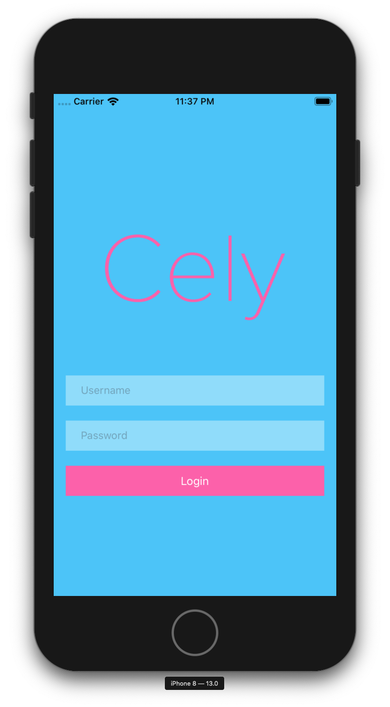
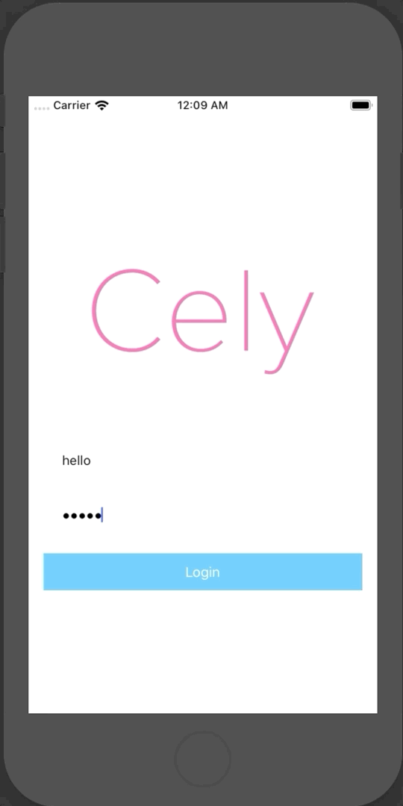

The power of Cely's configuration comes from its enum dictionary for CelyOptions. Below are sections to go over these options.
.loginViewController#
To use your own login, set the custom Login ViewController as .loginViewController inside of the withOptions in Cely.setup(_:).
// iOS 13 | Swift 5.0 | Xcode 11.0
Cely.setup(with: window, forModel: User(), requiredProperties: [.token], withOptions: [
.loginViewController: UIHostingController(rootView: LoginContentView())
])
.loginStyle#
As of Cely's version 2.x.x, the built-in LoginViewController is more for rapid development/prototyping with the expectation that the developer will eventually configure Cely with their own LoginViewController. That's not to say that the role that Cely's built-in LoginViewController won't change in the future to include more customizable features and can become an overall end solution for some applications.
As of this writing, simply create a class/struct that conforms to the CelyStyle. Please refer to CelyStyle for more information on what's customizable. Here is an example:
struct CottonCandy: CelyStyle {
func backgroundColor() -> UIColor {
return UIColor(red: 86/255, green: 203/255, blue: 249/255, alpha: 1)
}
func buttonTextColor() -> UIColor {
return .white
}
func buttonBackgroundColor() -> UIColor {
return UIColor(red: 253/255, green: 108/255, blue: 179/255, alpha: 1)
}
func textFieldBackgroundColor() -> UIColor {
return UIColor.white.withAlphaComponent(0.4)
}
func appLogo() -> UIImage? {
return UIImage(named: "CelyLogo")
}
}
Now to set this style, add .loginStyle to withOptions: in Cely.setup(_:):
// AppDelegate.swift
Cely.setup(with: window, forModel: User(), requiredProperties: [.token], withOptions: [
.loginStyle: CottonCandy(),
// ...
])
Your built-in screen should've changed to:

.celyAnimator#
In order to override the transition animations when loggin in, you must create a class/struct that conforms to the CelyAnimator protocol. Instead of transition from Left -> Right, in the example below we are transitioning from Top -> Bottom. Feel free to use any animation frameworks/libraries within loginTransition(_:) or logoutTransition(_:).
struct VerticalAnimator: CelyAnimator {
func loginTransition(to destinationVC: UIViewController?, with celyWindow: UIWindow) {
if let snapshot = celyWindow.snapshotView(afterScreenUpdates: true) {
destinationVC?.view.addSubview(snapshot)
celyWindow.setCurrentViewController(to: destinationVC)
UIView.animate(withDuration: 0.5, animations: {
snapshot.transform = CGAffineTransform(translationX: 0.0, y: 1000.0)
}, completion: { (value: Bool) in
snapshot.removeFromSuperview()
})
}
}
func logoutTransition(to destinationVC: UIViewController?, with celyWindow: UIWindow) {
if let snapshot = celyWindow.snapshotView(afterScreenUpdates: true) {
destinationVC?.view.addSubview(snapshot)
celyWindow.setCurrentViewController(to: destinationVC)
UIView.animate(withDuration: 0.5, animations: {
snapshot.transform = CGAffineTransform(translationX: 0.0, y: -1000.0)
}, completion: {(value: Bool) in
snapshot.removeFromSuperview()
})
}
}
}
Now to set this animation, add .celyAnimator to withOptions: in Cely.setup(_:):
// AppDelegate.swift
Cely.setup(with: window, forModel: User(), requiredProperties: [.token], withOptions: [
.celyAnimator: VerticalAnimator()
// ...
])
You application should now transition from Top -> Bottom:
